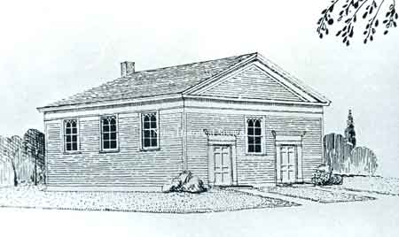
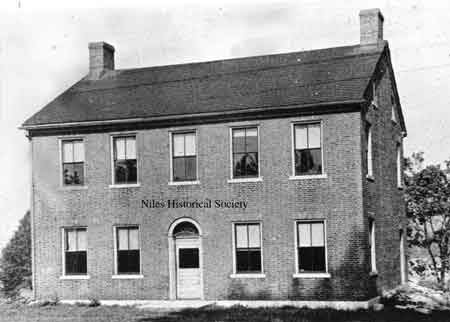
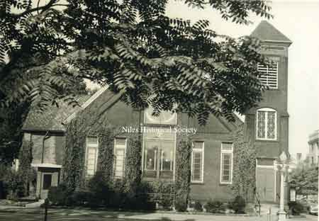
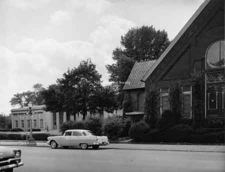
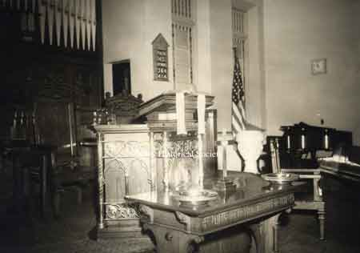
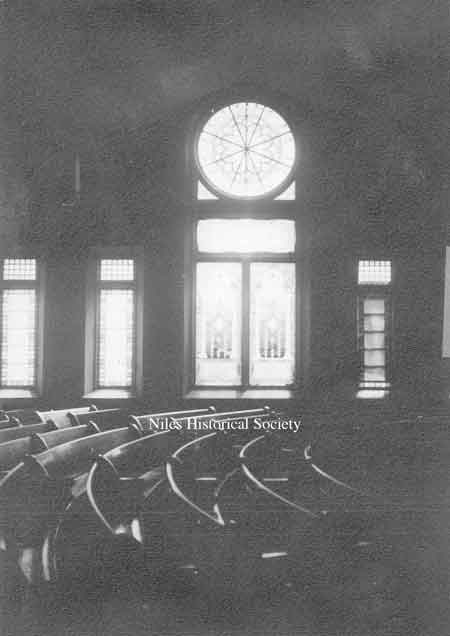
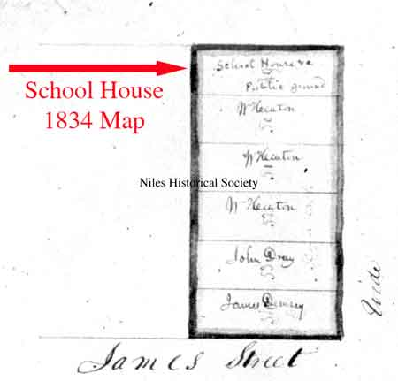
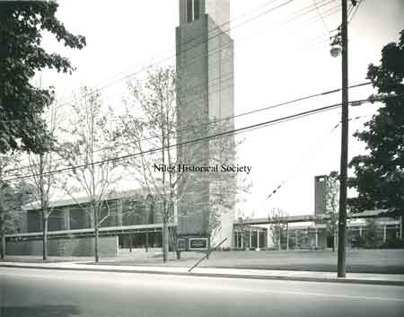

FirstPresbyterianChurch
{kind=link}

First United Presbyterian Church. This first church was constructed in 1849-1850 on a lot donated by James Heaton on the southwest corner of North Main and Church Streets.

A 1976 photograph of the Eben Blachley house located at 1010 Vienna Aveenue and believed to be the oldest existing brick house in Niles.
{kind=link}

A photo of the Eben Blachley House, believed to be the oldest existing brick house in Niles.

First United Presbyterian Church. In the mid 1920's the steeple was removed, leaving just the bell tower. It had become unsound and the slate that covered it was falling off.
{kind=link}

First United Presbyterian Church.

First United Presbyterian Church.
{kind=link}

A view of the First Presbyterian Church in its original location on the corner of Church and Main Streets shortly before it would be razed and land donated to the McKinley Memorial Association.
{kind=link}

Interior view of the Niles First Presbyterian Church when it was located downtown.
{kind=link}

A photo of the interior of the old First Presbyterian Church located on the corner of Main and Church Streets. The rose window from the inside and curved seats.
{kind=link}

Close-up of the 1834 Heaton Village map shows the platting of lots along North Main Street and James Street(now Park Avenue).
{kind=link}

First Presbyterian Church Dedicated in 1957